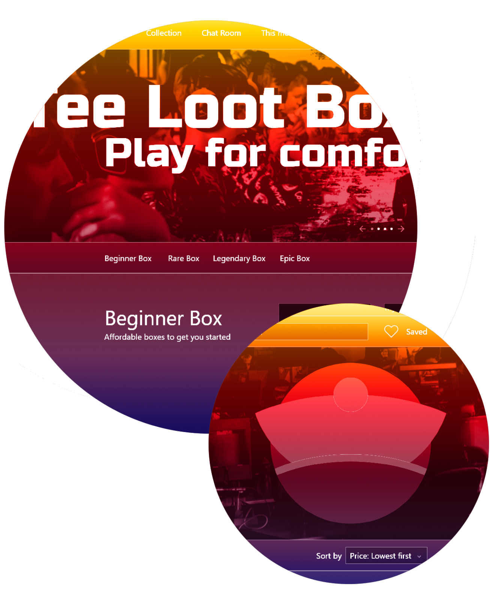
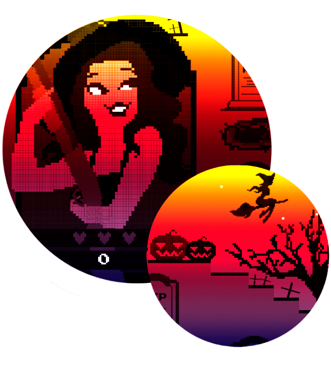
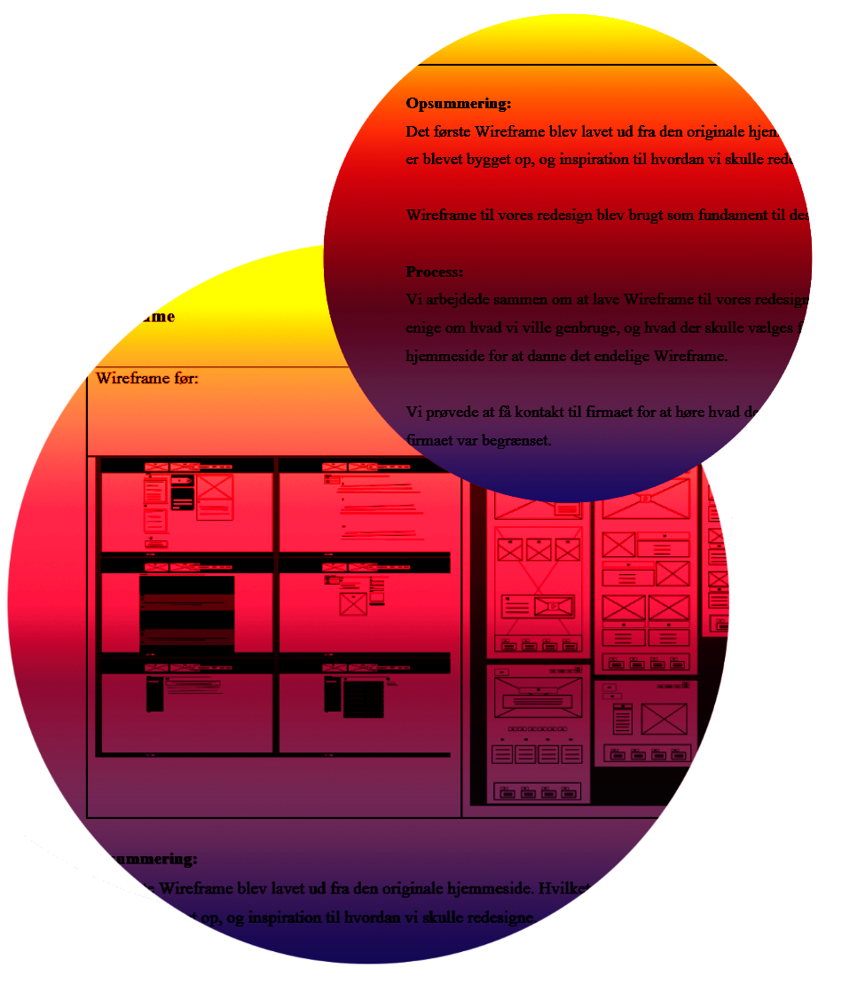

Tema 2 • Grundlæggende
HTML
02.04.02 responsive_site_v2
Min første responsive hjemmeside.
I forløbet af opgaven lærte jeg at kode HTML og CSS, og bruge de designregler vi blev undervist i - såsom font teori, farveteori og komposition - for at skabe et æstetisk layout. Derudover lærte jeg hvordan man laver og bruger:
- Moodboard
- Wireframe
- Layout Diagram
- Styletile
Nedenstående link vil tage dig væk fra denne hjemmeside, og hen til opgaven.
Tema 3 • Grundlæggende UX
03.01.05 Idé
Fra research til Idé
I forløbet af opgaven lærte jeg at brainstorme indsigter, ud fra samlet viden, og generere en Ide til en hjemmeside.
Her skulle jeg tage stilling til problemstillinger og databehandling af mine indsigter.
Jeg lærte, at vælge og fremlægge mine indsigter i et team.
Jeg lærte at nogen af de bedste ideer kommer når man ikke lader sig selv overtænke, og bare skriver ned, eller tegner, hvad man først tænker på. Det demonstrerer min Crazy 8s test fremragende.


03.03.02 Endelig prototype
Min første protype
I forløbet af opgaven lærte jeg hvordan man bruger Adobe XD til at producere en prototype.
For at få det endelige resultat lærte jeg, hvordan man laver og bruger tests, såsom “Tænk højt test”, for at få et dybdegående indtryk af hvordan brugeroplevelsen er.
Nedenstående link vil tage dig væk fra denne hjemmeside, og hen til opgaven.
03.03.03 Pitch
Min første pitch
I forløbet af opgaven lærte jeg hvordan man tager 3 ugeres arbejde og koger det ned til en 8 minutters fremlæggelse.
Pitch
Tema 4 • Animation
04.01.05 - Assetliste og designdokumentation
I forløbet af opgaven lærte jeg at bruge Adobe Illustrator til at producere en assetliste og dokumentere min proces.

04.05.01 Individuelt spil
Mit første spil
I forløbet af opgaven lærte jeg hvordan man genererer ideer og får lavet en papirprototype. Jeg fik repeteret hvordan man laver og bruger en stil og et moodboard.
Jeg lærte hvordan man laver og bruger et UML Aktivitetsdiagram og et State machine diagram.
Jeg lærte at lave animationer i CSS og mest af alt hvordan man koder i Javascript, og hvordan man med JS kan tage de animationer i brug og tilføje lyd til sitet.
Nedenstående link vil tage dig væk fra denne hjemmeside, og hen til opgaven
Tema 5 • Grundlæggende indhold
05.01.01 Pilotprojekt
I forløbet af opgaven lærte jeg hvordan man laver en film. Jeg fik genopfrisket hvordan man interviewer en person, og hvordan man får information der er spændende at se i en film.
Jeg lærte om filmteori, hvordan man laver og bruger b-rolls, establishing shot og forskellige vinkler og hvad de repræsenterer. Jeg lærte hvordan man laver og bruger et storyboard og en synopsis.
Jeg lærte hvordan man optager lyd separat, og hvordan man klipper det hele sammen i Adobe Premiere Pro.
Nedenstående link vil tage dig væk fra denne hjemmeside, og hen til opgaven.
05.03.01 Redesign og temadokumentation
Mit første Redesign
I forløbet af opgaven lærte jeg hvordan man laver og bruger et scrum board, til at organisere gruppearbejde.
Jeg lærte, hvordan man analyserer en virksomheds profil, ved brug af BERT og 5-sec testen.
Jeg lærte, at for at få et dybt indblik i en eksisterende hjemmeside, og hvad der skal forbedres, betaler det sig at lave følgende:
- Styletile
- Fotostil
- Sitemap
- Indholdsoversigt
- Funktionalitetsliste
- Wireframe
Jeg lærte, hvordan man bruger de informationer til at danne en idé til et nyt site, og redesigne alle de ovenstående elementer.
Jeg lærte, hvordan man i en gruppe planlægger og producere en interviewfilm og billeder.
Jeg lærte, hvordan man i en gruppe kan bruge GitHub til at kode en side sammen.
Jeg lærte, hvordan man på samme måde kan bruge BERT og 5.sec test til eget redesignet site, og hvordan man laver og bruger en Eksperttest.
Jeg lærte, hvordan man kan få et site til at uploade hurtigere ved brug af information fra en Lighthouse test.
Sidst lærte jeg hvordan man tager 4 menneskers 4 ugers arbejde, dokumenterer processen og fremlægger det på 7 minutter.
